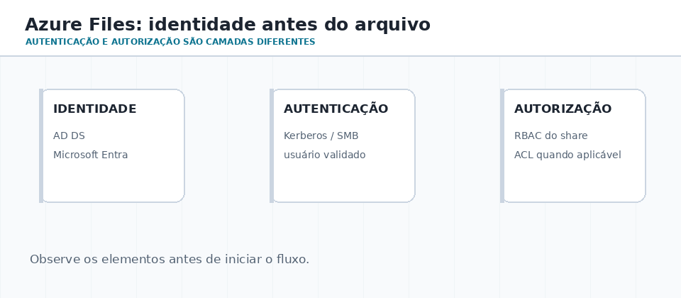
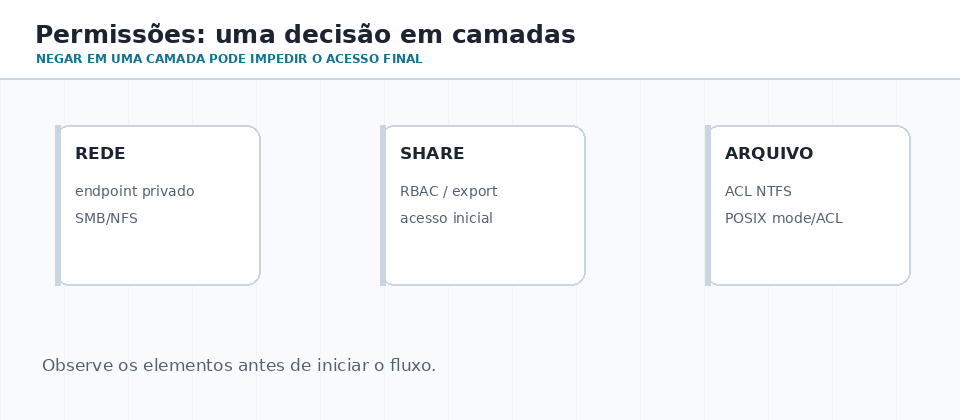

Como o arquivo viaja?
Compare SMB e NFS: protocolo, semântica e sistemas que os utilizam.
AULA 07
Compartilhar uma pasta parece simples até aparecerem plataformas diferentes, grupos de usuários, auditoria, rede instável e regras que não podem ser tratadas como “uma senha para tudo”.
01 · MAPA DA AULA
Compare SMB e NFS: protocolo, semântica e sistemas que os utilizam.
Separe autenticação, autorização, grupos, ACL e RBAC.
Faça o laboratório de observação e projete uma pasta departamental segura.
02 · PROTOCOLOS
SMB é comum em ambientes Windows e preserva uma experiência de compartilhamento rica para aplicações Win32. NFS é uma escolha tradicional do mundo Unix/Linux, com modelos de identidade e segurança que variam conforme a versão e a configuração, incluindo UID/GID e Kerberos.
A questão inicial é: quais clientes, quais identidades e quais regras o compartilhamento deve respeitar? A resposta muda a escolha do protocolo e da gestão de acesso.
| Questão | SMB | NFS |
|---|---|---|
| Ecossistema | Windows e clientes compatíveis | Linux/Unix e workloads POSIX |
| Identidade típica | AD DS, Microsoft Entra / Kerberos conforme o serviço | UID/GID ou Kerberos, conforme configuração |
| Pensamento inicial | usuário + grupo + ACL | usuário/grupo Unix + permissões POSIX |

ATIVIDADE 01 · PROTOCOLOS
Produza: duas hipóteses justificadas e o diagrama. Não é necessário ter um servidor instalado.
SMB com identidade de domínio é uma hipótese comum para a primeira equipe; NFS pode atender a segunda. Ambas exigem verificar versões, segurança, suporte dos clientes, permissões e requisitos reais. NFS e SMB não são o formato físico do disco no servidor.
03 · AUTENTICAR ≠ AUTORIZAR
O usuário ou serviço se apresenta: conta local, domínio, Kerberos, certificado ou identidade gerenciada.
O sistema aplica grupos, RBAC, ACL, modo POSIX e regras de compartilhamento.
Logs e metadados permitem investigar quem leu, mudou ou tentou acessar um recurso.

Para SMB com identidade, uma conta de armazenamento utiliza uma fonte por vez: Microsoft Entra Kerberos, Active Directory Domain Services ou Microsoft Entra Domain Services. Isso não significa que todos os cenários NFS usam o mesmo mecanismo.
ATIVIDADE 02 · IDENTIDADE
Produza: uma tabela com etapa, evidência e responsável por verificá-la.
Entrada na conta: autenticação; decisão de negar alteração: autorização; registro do evento: auditoria. Verifique qual identidade e grupos foram usados e quais regras se aplicam ao compartilhamento e ao arquivo.
04 · CAMADAS DE PERMISSÃO
Em um compartilhamento corporativo, a decisão pode envolver rede, compartilhamento, papel RBAC, identidade, ACL da pasta e, em Linux, modo e ACL POSIX. Investigue do lado de fora para dentro.

| Camada | Pergunta para diagnosticar | Exemplo |
|---|---|---|
| Conectividade | O cliente alcança o serviço? | DNS, rota, firewall, porta 445 no SMB |
| Identidade | Quem é o solicitante? | usuário AD, principal Entra, UID/GID |
| Controle do share | Pode montar/abrir o compartilhamento? | RBAC de nível de share |
| Controle do objeto | Pode ler, criar, alterar ou excluir? | ACL NTFS ou permissões POSIX |
ATIVIDADE 03 · DIAGNÓSTICO
Produza: uma sequência de diagnóstico. Sem acesso a laboratório, responda usando o cenário.
A leitura mostra que aquele acesso funcionou naquele momento; não prova direito de escrita. Confira se a conta usada é a esperada, depois as permissões aplicáveis ao compartilhamento e ao arquivo. O diagnóstico efetivo depende do servidor e das regras configuradas.
05 · SIMULADOR DE DECISÃO
06 · LABORATÓRIO GUIADO
Escolha o sistema disponível. Os comandos consultam informações; não criam compartilhamentos nem alteram permissões. Se não houver conexão ou comando disponível, registre isso e use o cenário proposto no workbook.
No Windows, abra o PowerShell e execute:
whoami whoami /groups
No Linux ou WSL, abra o terminal e execute:
id
Registre o nome da conta e um grupo, evitando expor identificadores pessoais na entrega. Os grupos Windows e os IDs Unix usam modelos diferentes.
Get-SmbConnection Get-SmbMapping
findmnt -t nfs,nfs4,cifs,smb3
Uma lista vazia pode significar que não há conexão correspondente na sessão; não prova que o protocolo é incompatível. Alguns comandos podem não existir no ambiente. Em WSL, as montagens observadas são as da distribuição, não necessariamente todas as conexões do Windows.
No macOS, se houver compartilhamento autorizado, use Finder → Ir → Conectar ao Servidor para observar um endereço smb://servidor/compartilhamento. Não é necessário conectar para responder.
Escolha uma pasta que pertence à sua conta; substitua CAMINHO por esse caminho, sem usar pastas de outros usuários.
Get-Acl -LiteralPath $env:USERPROFILE | Format-List
ls -ld ~ getfacl ~
Se getfacl não estiver instalado, registre a ausência e interprete o resultado de ls. O modo e a ACL locais, isoladamente, não comprovam o acesso efetivo através de um compartilhamento remoto.
Entregue: uma tabela com comando, observação e limite da evidência; finalize explicando por que leitura e gravação podem ter resultados diferentes.
Fontes: Microsoft · conexões SMB; Microsoft · mapeamentos SMB; Linux · NFS; Apple · conectar a servidores.
07 · VERIFICAÇÃO
Qual opção descreve corretamente RBAC e ACL?
08 · DESAFIO FINAL
Há três grupos: Docentes (alteram), Estudantes (leem uma área e enviam entregas) e Coordenação (administra). Defina protocolo, identidade, grupos, permissões no compartilhamento e permissões nas pastas. Inclua uma evidência de auditoria que você desejaria guardar.
Produza uma tabela de decisão e marque em qual camada cada regra será aplicada. Não há uma única ferramenta correta: a qualidade está na justificativa coerente.
Use as atividades guiadas desta aula para exercitar cada tema em Windows e Linux, com alternativas para ambientes sem servidor.